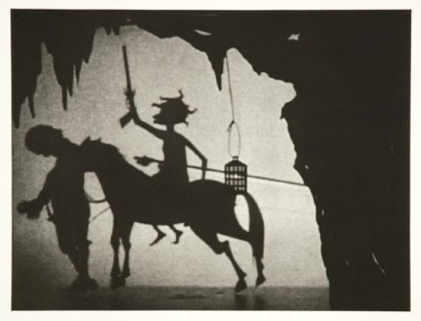

-
Restricted Spaces: Interview with Leonard Cassuto
by Idiom October 5, 2010
Leonard Cassuto, professor of American Literature at Fordham University, tries his hand at curating tonight when he opens The Art of Captivity at The Center Gallery. Idiom caught up with Cassuto to discuss frontier ideology, captivity narratives throughout history, and how an English Professor wound up curating a contemporary art show in the first place.
Idiom: Can you give me a little background about the show? How did you get involved?
Leonard Cassuto: So how does an English professor wind up curating an art exhibition? Not by the usual routes, that’s for sure. I devised a course on literature captivity a few years ago, and soon after it began, I met an artist, Anne Sherwood Pundyk, who had painted a series of pictures relating to the Persephone myth. I had just assigned an ancient Greek poem that retold that myth, and I decided to assign the paintings as well. The students and I had a lively discussion of the poem and the pictures together, including one class session with the artist herself. The exhibit, you could say, was born in mind that day. There remained a good deal of work to secure the space and the art and so forth, but that early idea of creating an interdisciplinary conversation about captivity is the seed that grew into the exhibition opening tonight and its sister exhibition, which opens later in the month at Susan Eley Fine Art.My expertise is mainly in American literature and American studies, an interdisciplinary field devoted to the study of American culture. (There’s links to some of my books and articles, on my website)
I’ve researched and written about early American captivity narratives and about the closely related subject of crime. The course started as a way to broaden those interests, and with this exhibition, they’ve broadened beyond anything I might have expected! Mostly, though, I’m just curious about things that cross my path, and one of my favorite parts of my job is the way that it allows me to follow my curiosity wherever it might lead. The Art of Captivity is a wonderful ending to the thread that I started following when I met Anne Pundyk for the first time–but I hope that it’s also the beginning of other inquiries.
Idiom: Do you see the legacy of early captivity narratives at work today?
LC: Certainly–captivity is all over the place. For example, the structure of the generic serial killer story usually involves a young woman being held by the killer as police and/or detective(s) race to free her. This trunk story is inconceivable without the captivity narrative that undergirds it. In a more literary vein, Stephen King’s most self-reflexive (and to my thinking, his best) book, Misery, is a modern captivity narrative.
Idiom: At the risk of speculation, why do you think America’s interest in these stories has been so durable?LC: I’ll take the risk and speculate as long as you understand that I’m talking a bit out of my hat. It seems to me that part of the enduring usefulness of the captivity template–the way that it continues to scratch our collective itches–comes from the way that the captivity narrative developed out of one of the earliest American identities: as a people of the frontier. The idea of the frontier remains potent even though we’re not a frontier nation anymore, at least not geographically speaking. Ideologically, the US still thinks of itself as a frontier nation. When we think of freedom—perhaps the central American national keyword—we think of freedom to do things, and also the room to do them in. In other words, Americans, thanks to the frontier ideology that socializes us, may be more sensitive than members of some other cultures to restrictions of our movements. For an American, for example, an office cubicle doesn’t offend just because of the boring work that we suspect someone does in it; we also react to the restricted space of the cubicle itself
As to the larger trends, I can only scratch the surface. Anne Pundyk points out that it’s not that hard to come up with a contemporary book or movie that addresses the different “flavors” of captivity that are represented in each book on my course reading list. For example, Mad Men updates Wilson’s The Man in the Grey Flannel Suit; the various popular vampire shows (True Blood, The Vampire Diaries) gloss The Strange Case of Dr. Jekyll and Mr. Hyde. And a movie like The Apartment is echoed by the popular comic strip, Dilbert, or a show like The Office.
Idiom: What should visitors look for in the exhibition?
LC: Well, the first thing to say is that looking at art can be as personal and creative an experience as making it. So I wouldn’t presume to tell the viewer what he or she should take away from this exhibition. But I will say that we’ve tried to give the viewer a lot of contrasts to enable him or her to think more deeply about what it can mean to be “captive,” and what goes into captivity (or captivation) across a range of its possible expressions. In other words, we’ll be glad if the viewer walks away with some new questions about the meaning of a familiar concept.
Idiom: Can you speak a little bit about how these ideas have impacted your making of the exhibition?LC: My idea all along has been to use first my courses and now the exhibition to refract the idea of captivity: that is, to break it up and show some of its different possibilities–such as captivity in parenthood, childhood, disability, love and social relationships, employment—in juxtaposition with each other so that we might see the applicability of the idea of captivity to a vast range of human experience, not just the case of someone who’s being physically restrained by someone else. That variety is what attracted me, first as a teacher and then as a curator. It also shows, moreover, that a lot of captivity can be voluntary: ideas about captivity (and its inverse, freedom) are a complicated part of everyday life. They’re not restricted to the extremes of human cruelty and endurance.
I don’t in any way seek to downplay the importance of life- and soul-threatening captivity like slavery (which is also represented in the exhibition). But part of what excited me about this project is the possibility of placing horrors like that into a continuum that leads back into the lives that most people lead, in order to show that captivity is a theme that pervades our existence.